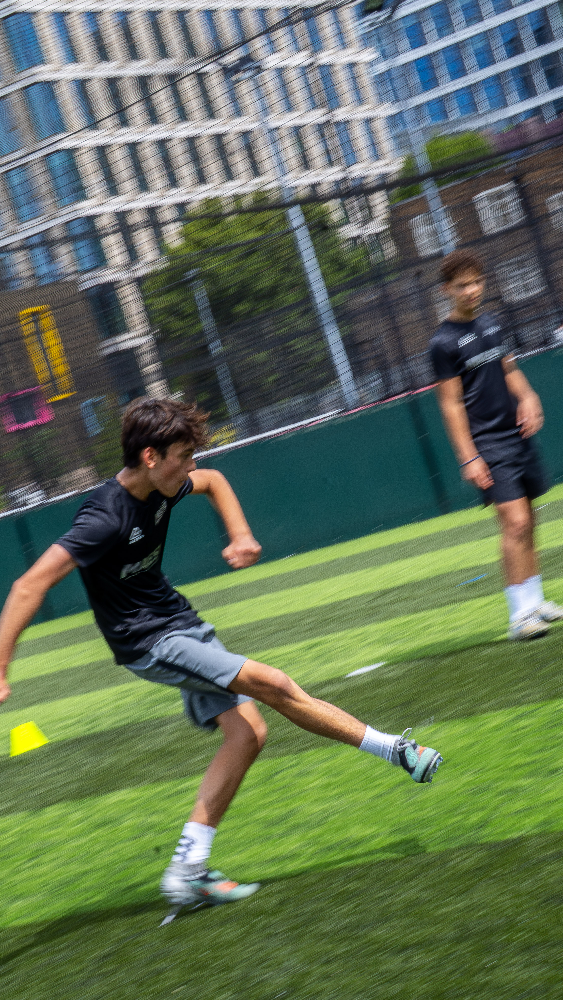
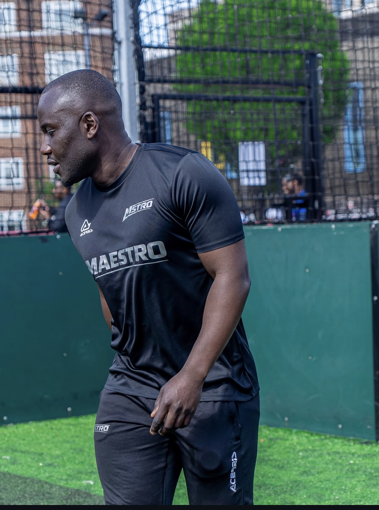
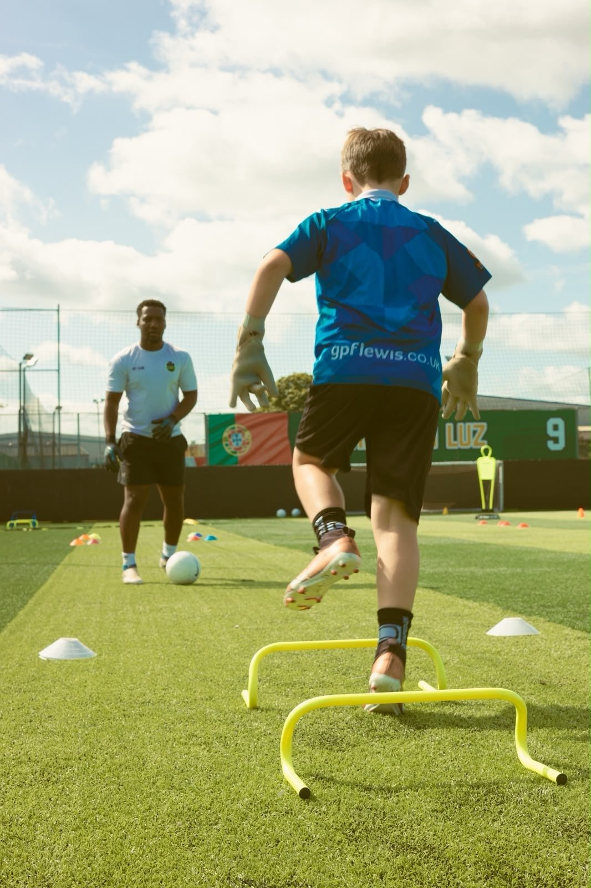
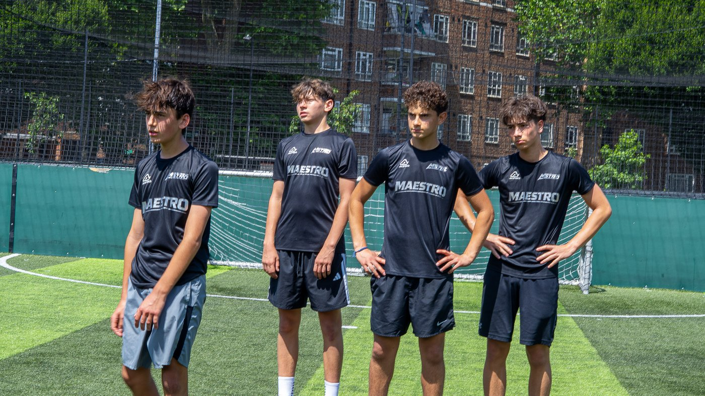
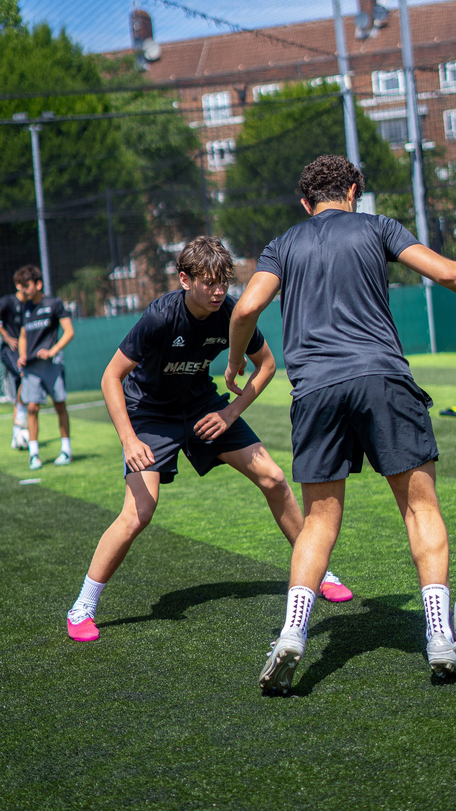
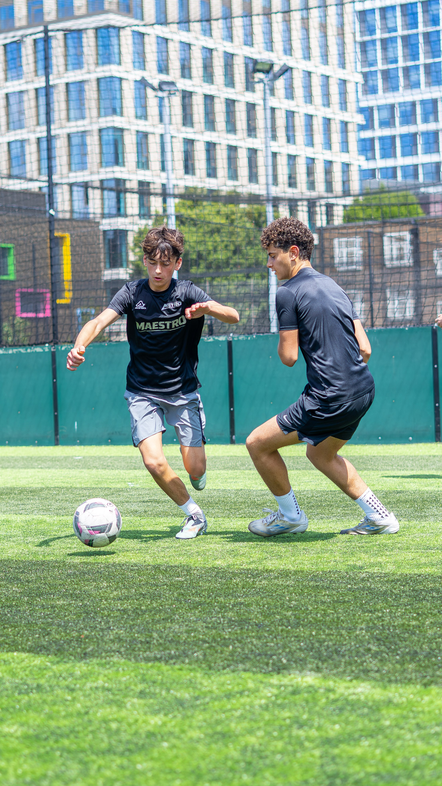
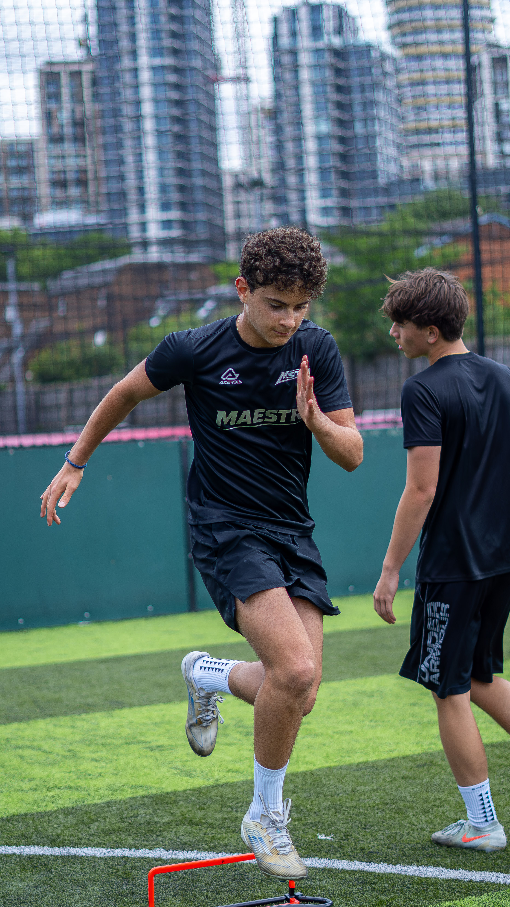
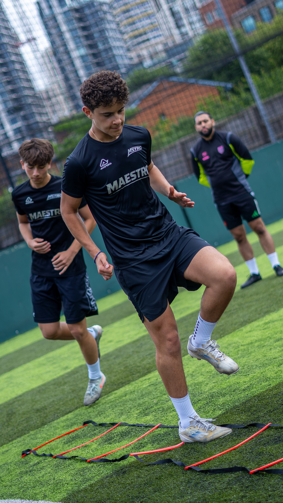
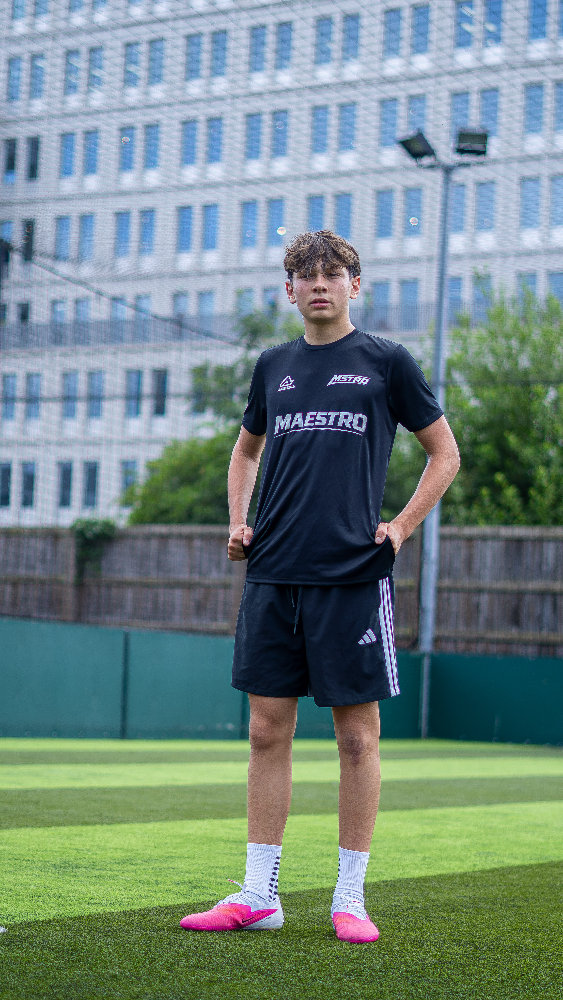
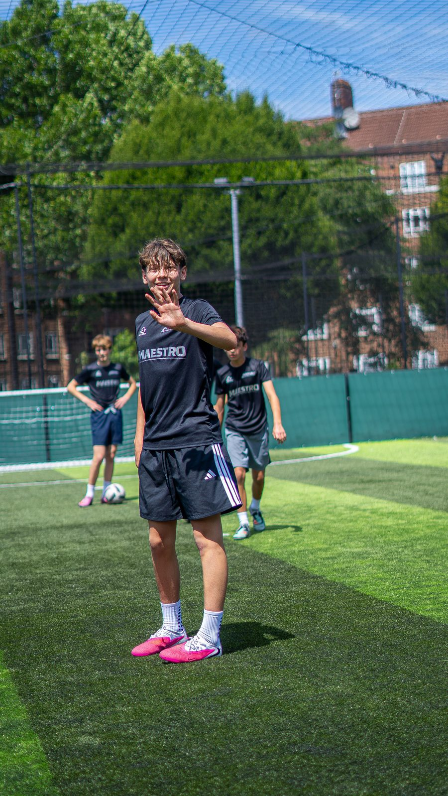

MAESTRO is elite 1-2-1 football development and weekly group training for players who want to be noticed for the right reasons — talent, discipline, and work rate. Master your game.
Talent gets you noticed. Hard work keeps you remembered.
Success isn't given — it's earned on the pitch, in the dark, when no one's watching. MAESTRO exists for players who want a coach that treats every session like it matters, because it does. Stay focused. Stay hungry. The game is yours.

For players aged 10–17 who are serious about their progression. Every plan includes personal coaching, video analysis, strength & conditioning, and a written report tracking real progress.
The foundation, built one session at a time.
A weekly one-to-one built entirely around where your game is right now. Every session is planned off the last — first touch under pressure, decision speed, the movement patterns that separate players who get picked from players who get overlooked.
The full pathway, for players chasing the next level.
Everything in Core, taken further. Match and session footage broken down frame by frame, a quarterly Player Pathway Review benchmarked against FA Talent ID standards, and direct access to your coach between sessions — so nothing that matters gets left until next week.
Open to all. One standard: excellence.
Our weekly group session in Shepherd's Bush — where players of every level train side by side under the same coaching standard. No egos, no shortcuts. Just competitive reps, honest feedback, and the kind of environment that sharpens you week on week.
Every Sunday, players from every background and every level come together on the same pitch, under the same coaching standard. It's competitive, it's demanding, and it's exactly the environment that turns raw talent into a real footballer.
Individual Performance Specialists — UEFA qualified outfield and goalkeeper coaching, delivering premium 1-2-1 and elite group sessions in West London.

Formal player identification and assessment, built into every Premium review.
Professional Footballers' Strength & Conditioning accreditation.
Sports science and performance foundation certification.
UEFA licensed coaching, with progression towards higher UEFA levels and Level 4 S&C ongoing.
Outfield coaching is only half the picture — our goalkeepers train under a dedicated specialist with real academy and professional-level experience.

Chris Mensah is the Head Goalkeeping Coach for ELA within West London. He oversees scouting opposition and develops training and game plans for all goalkeepers — including consistent video analysis of games and training sessions, consulting with goalkeepers to devise solutions, and collaborating with a team of experts to improve every aspect of the goalkeeper's game.
Chris has worked with the likes of Fulham FC as a shadowing coach, and has a number of academy scholarship players within his program outside of his grassroots team.







Every programme starts by working backwards from where a player wants to get to. Here's what that's looked like for a few of our families.
We sat down at the start and talked through exactly where he was at, his position, and what we wanted to see by the end of the season. Every single session since has clearly been built around that — nothing generic, nothing wasted. The improvement in his decision-making on the ball in just a few months has been the biggest change we've seen from any coaching he's had.
What stood out to us was the level of detail — his position, his specific weaknesses, the targets we agreed on together, all of it clearly feeding into what he actually does in each session. It doesn't feel like a standard drill night. It feels planned around him specifically, and the progress over a few months has genuinely surprised us.
The goals we set at the start weren't vague — and neither was the plan to get there. Every session works back from those targets, so nothing feels like it's just filling time. A few months in, the difference in his confidence and ability in his position is obvious, not just to us but to his own team coach.
Spaces on the Premium programme and Sunday Service are limited. Book a free consultation, or get in touch directly.